2019
OCAD U SATELLITE CAMPUS
Design development phase
A central atrium with studios stepping toward the park, designed around the process rather than the product of art and design.
CONTEXT
ASC 620: Integration Studio, Ryerson University
LOCATION
Junction Triangle, Toronto
SOFTWARE
Revit, AutoCAD, Photoshop, Rhinoceros 3D, Illustrator
COLLABORATOR
Lena Ma
RECOGNITION
Featured in 325 Magazine
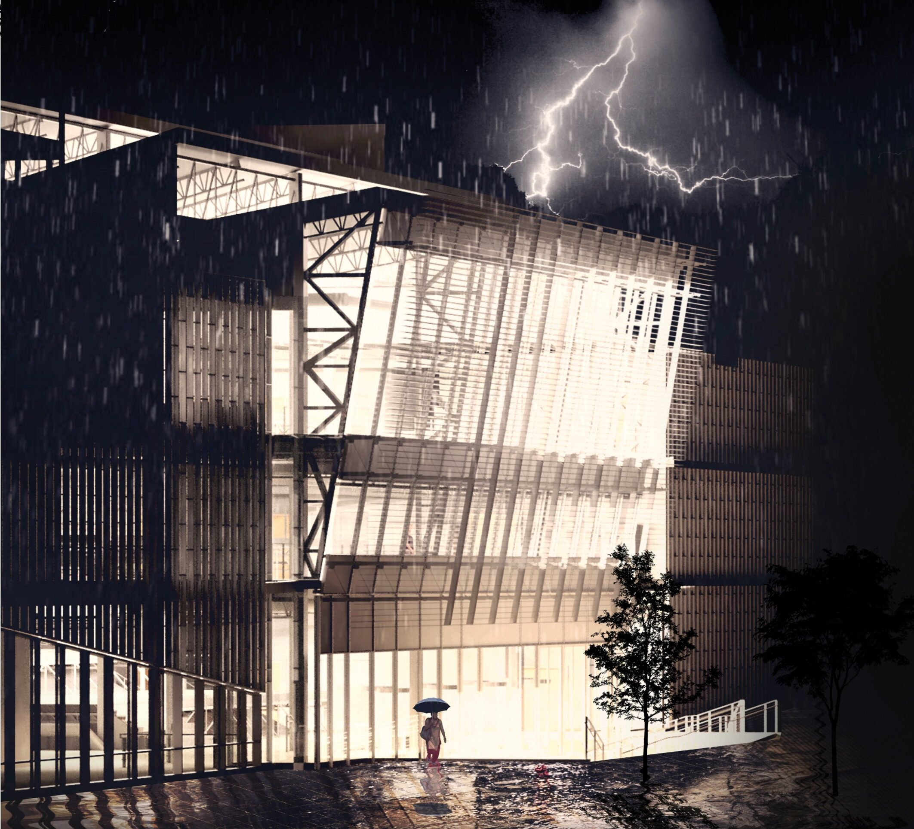
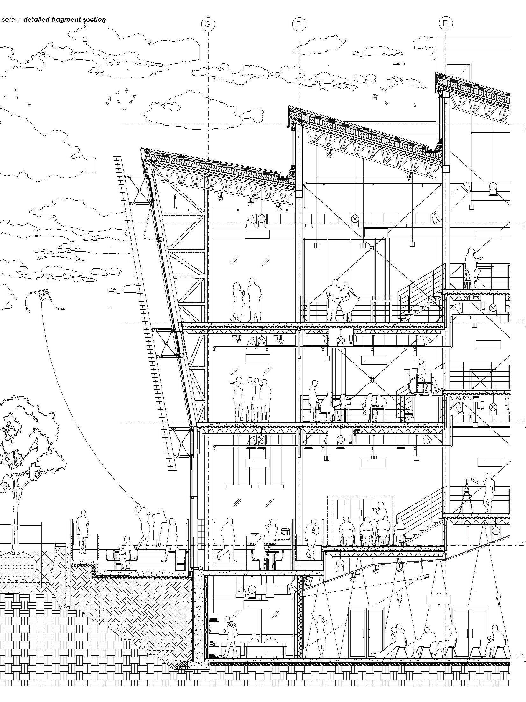
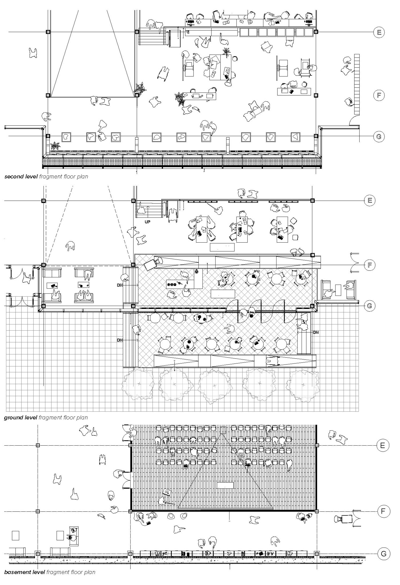
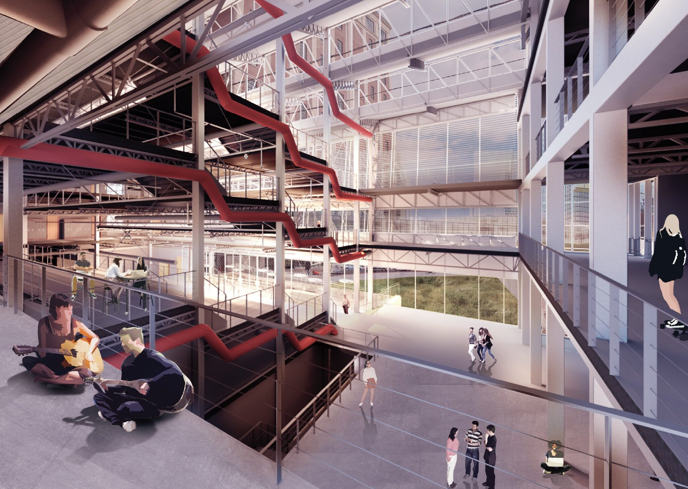
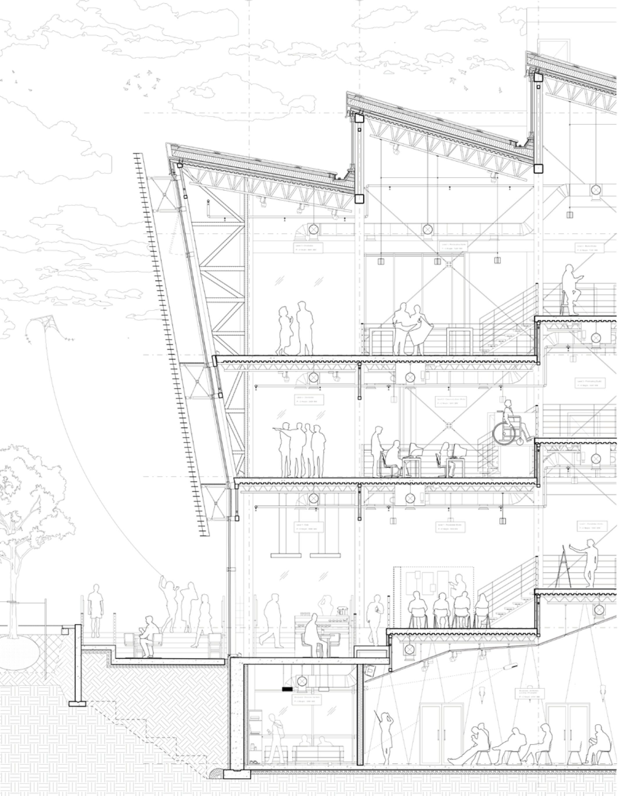
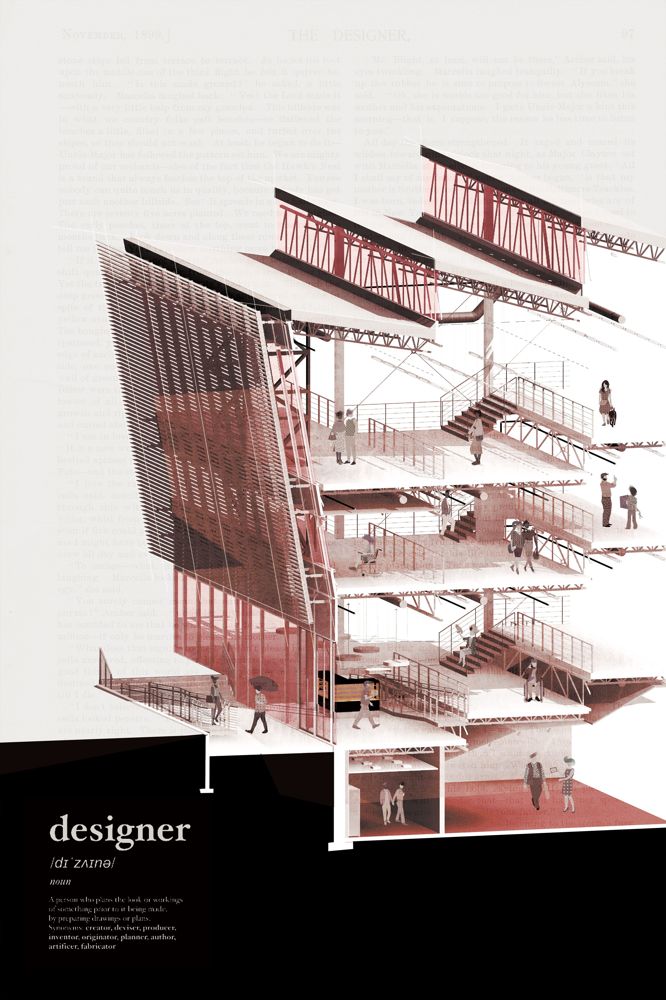
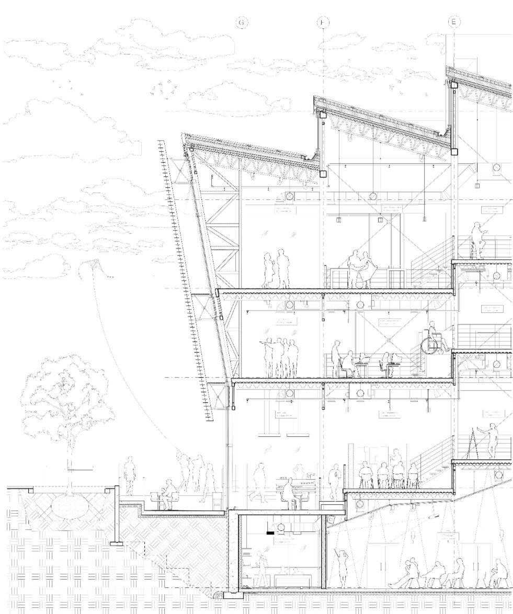
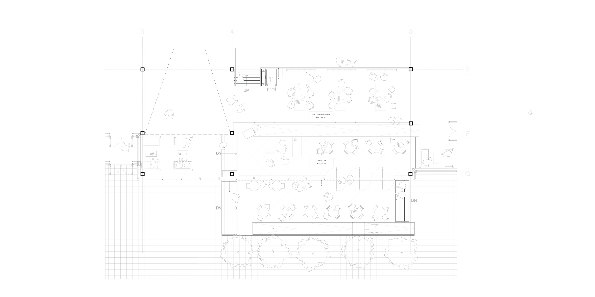
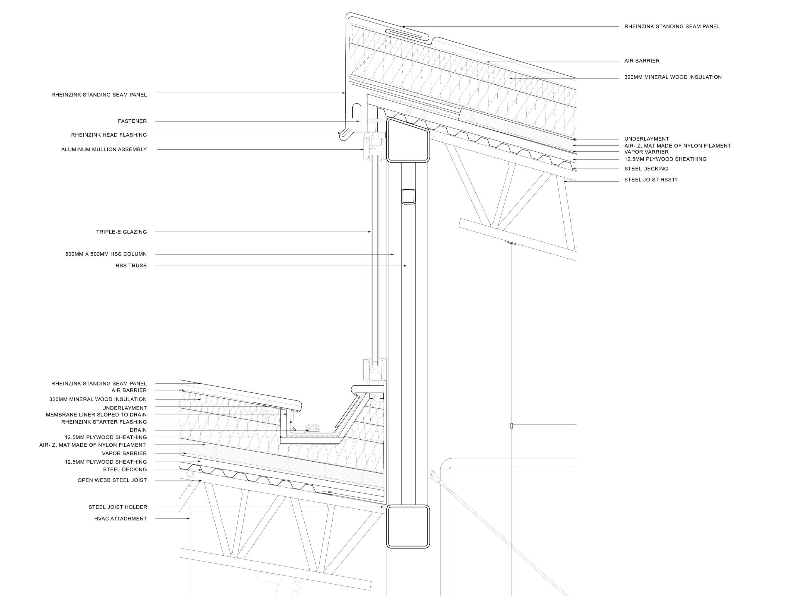
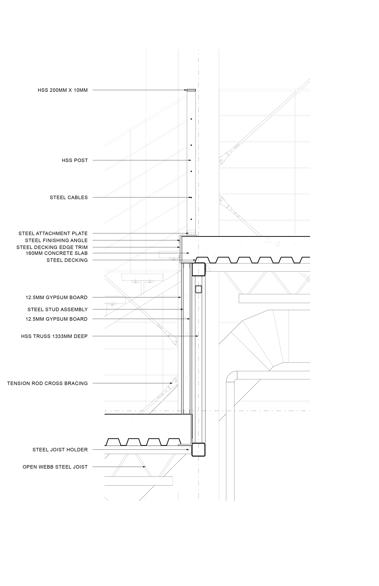
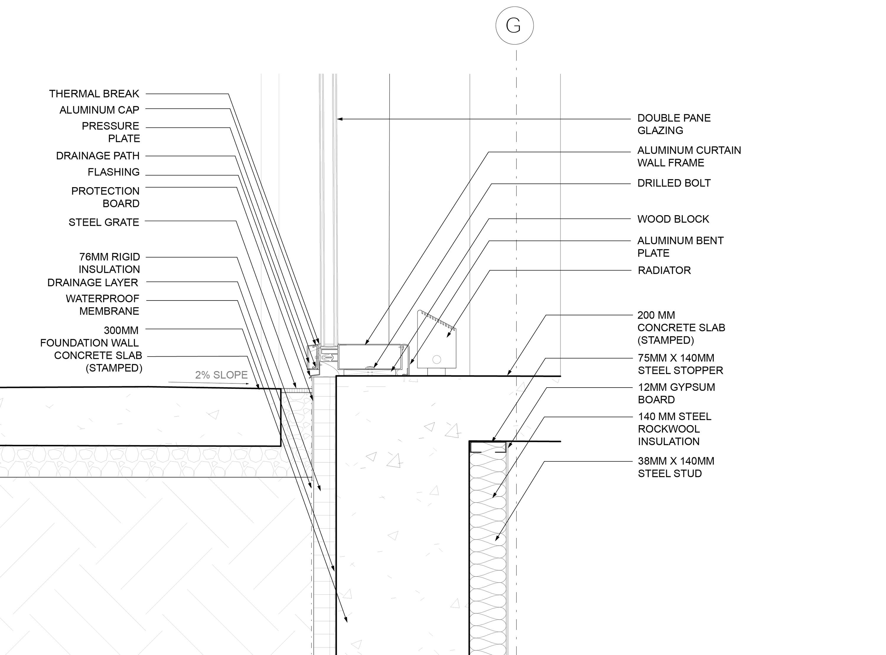
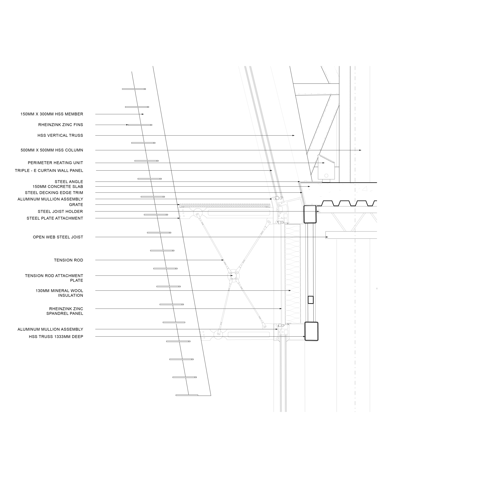
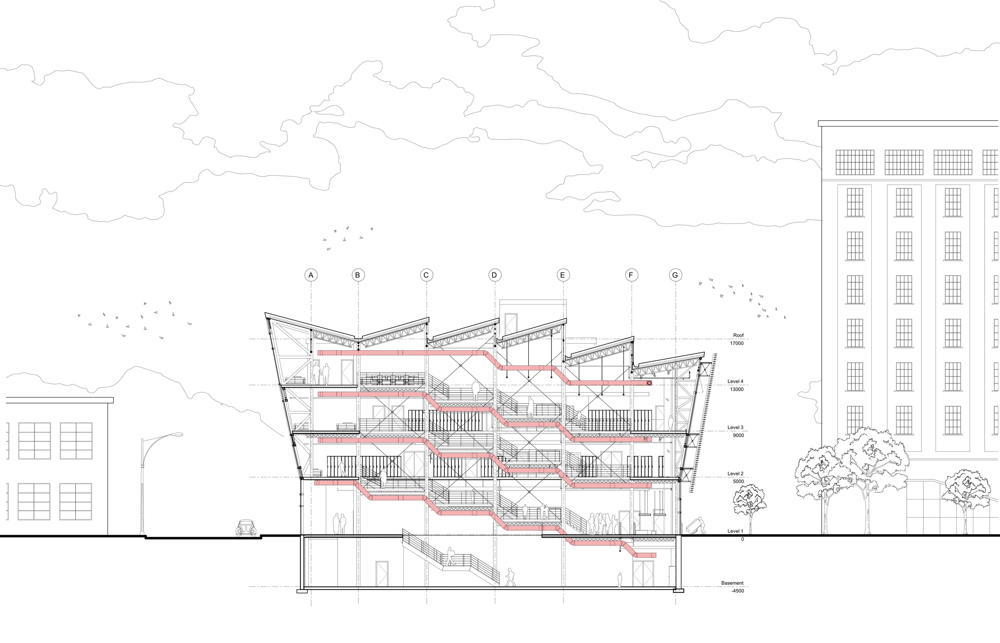